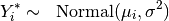
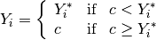
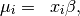
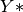
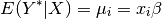
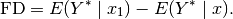

Linear Regression for a Left-Censored Dependent Variable
Tobit regression estimates a linear regression model for a left-censored dependent variable, where the dependent variable is censored from below. While the classical tobit model has values censored at 0, you may select another censoring point. For other linear regression models with fully observed dependent variables, see Bayesian regression (), maximum likelihood normal regression (), or least squares ().
z5 <- ztobit$new()
z5$zelig(Y ~ X1 + X2, below = 0, above = Inf, data = mydata)
z5$setx()
z5$sim()
With the Zelig 4 compatibility wrappers:
z.out <- zelig(Y ~ X1 + X2, below = 0, above = Inf, model = "tobit", data = mydata)
x.out <- setx(z.out)
s.out <- sim(z.out, x = x.out)
zelig() accepts the following arguments to specify how the dependent variable is censored.
below: (defaults to 0) The point at which the dependent variable is censored from below. If any values in the dependent variable are observed to be less than the censoring point, it is assumed that that particular observation is censored from below at the observed value. (See for a Bayesian implementation that supports both left and right censoring.)
robust: defaults to FALSE. If TRUE, zelig() computes robust standard errors based on sandwich estimators (see and ) and the options selected in cluster.
cluster: if robust = TRUE, you may select a variable to define groups of correlated observations. Let x3 be a variable that consists of either discrete numeric values, character strings, or factors that define strata. Then
> z.out <- zelig(y ~ x1 + x2, robust = TRUE, cluster = "x3",
model = "tobit", data = mydata)
means that the observations can be correlated within the strata defined by the variable x3, and that robust standard errors should be calculated according to those clusters. If robust = TRUE but cluster is not specified, zelig() assumes that each observation falls into its own cluster.
Zelig users may wish to refer to help(survreg) for more information.
Attaching the sample dataset:
data(tobin)
Estimating linear regression using tobit:
z.out <- zelig(durable ~ age + quant, model = "tobit", data = tobin)
## How to cite this model in Zelig:
## Kosuke Imai, Gary King, Olivia Lau. 2011.
## tobit: Linear regression for Left-Censored Dependent Variable
## in Kosuke Imai, Gary King, and Olivia Lau, "Zelig: Everyone's Statistical Software,"
## http://datascience.iq.harvard.edu/zelig
Setting values for the explanatory variables to their sample averages:
x.out <- setx(z.out)
Simulating quantities of interest from the posterior distribution given x.out.
s.out1 <- sim(z.out, x = x.out)
summary(s.out1)
##
## sim x :
## -----
## ev
## mean sd 50% 2.5% 97.5%
## 1 1.572 0.6871 1.499 0.5411 3.076
## pv
## mean sd 50% 2.5% 97.5%
## [1,] 3.374 4.273 1.68 0 15.1
Set explanatory variables to their default(mean/mode) values, with high (80th percentile) and low (20th percentile) liquidity ratio (quant):
x.high <- setx(z.out, quant = quantile(tobin$quant, prob = 0.8))
x.low <- setx(z.out, quant = quantile(tobin$quant, prob = 0.2))
Estimating the first difference for the effect of high versus low liquidity ratio on duration(durable):
s.out2 <- sim(z.out, x = x.high, x1 = x.low)
summary(s.out2)
##
## sim x :
## -----
## ev
## mean sd 50% 2.5% 97.5%
## 1 1.232 0.789 1.098 0.1561 3.145
## pv
## mean sd 50% 2.5% 97.5%
## [1,] 3.073 3.905 1.616 0 12.86
##
## sim x1 :
## -----
## ev
## mean sd 50% 2.5% 97.5%
## 1 2.036 1.032 1.902 0.516 4.433
## pv
## mean sd 50% 2.5% 97.5%
## [1,] 3.403 4.071 2.109 0 13.22
## fd
## mean sd 50% 2.5% 97.5%
## 1 0.8035 1.233 0.7436 -1.368 3.527
plot(s.out1)
Zelig-tobit
Let  be a latent dependent variable which is distributed
with stochastic component
be a latent dependent variable which is distributed
with stochastic component

where  is a vector means and
is a vector means and  is a
scalar variance parameter. is not directly observed,
however. Rather we observed
is a
scalar variance parameter. is not directly observed,
however. Rather we observed  which is defined as:
which is defined as:

where  is the lower bound below which is
censored.
is the lower bound below which is
censored.
The systematic component is given by

where  is the vector of
is the vector of  explanatory variables
for observation
explanatory variables
for observation  and
and  is the vector of
coefficients.
is the vector of
coefficients.
The expected values (qi$ev) for the tobit regression model are the same as the expected value of :

The first difference (qi$fd) for the tobit regression model is defined as

In conditional prediction models, the average expected treatment effect (qi$att.ev) for the treatment group is
![\begin{aligned}
\frac{1}{\sum t_{i}}\sum_{i:t_{i}=1}[E[Y^*_{i}(t_{i}=1)]-E[Y^*_{i}(t_{i}=0)]],\end{aligned}](_images/math/fd39d2da6c33f4ce8a5109998fdcc63ae68141dc.png)
where  is a binary explanatory variable defining the
treatment (
is a binary explanatory variable defining the
treatment ( ) and control (
) and control ( ) groups.
) groups.
The output of each Zelig command contains useful information which you may view. For example, if you run:
z.out <- zelig(y ~ x, model = "tobit", data)
then you may examine the available information in ``z.out`.
The tobit function is part of the survival library by Terry Therneau, ported to R by Thomas Lumley. Advanced users may wish to refer to help(survfit) in the survival library.